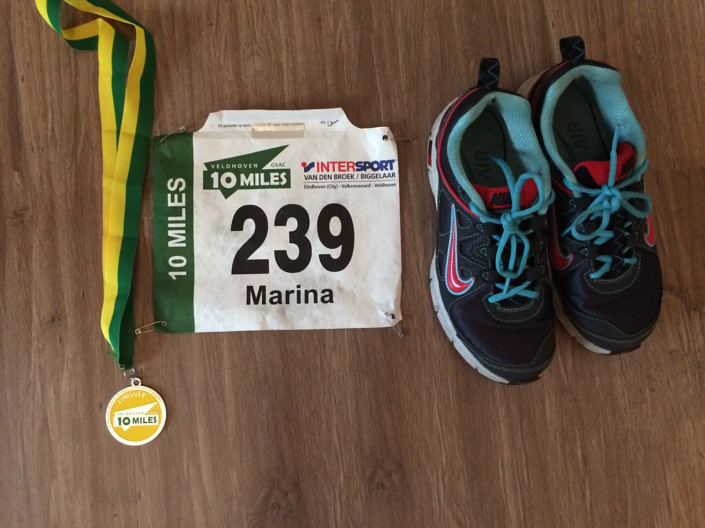

Running is free, you can do it anywhere, and it burns more calories than any other mainstream exercise.
Whatever your level, setting challenges is useful to stay motivated. Training for a race, such as a 5K, or a charity run is a good way to keep going.
It really helps to have someone about the same level of ability as you to run with. You'll encourage each other when you're not so keen to run. You'll feel that you do not want to let your running partner down, and this will help motivate you.
Keep a diary of your runs. Note down each run, including your route, distance, time, weather conditions and how you felt.
That way, whenever your motivation is flagging, you can look back and be encouraged by how much you have improved.
